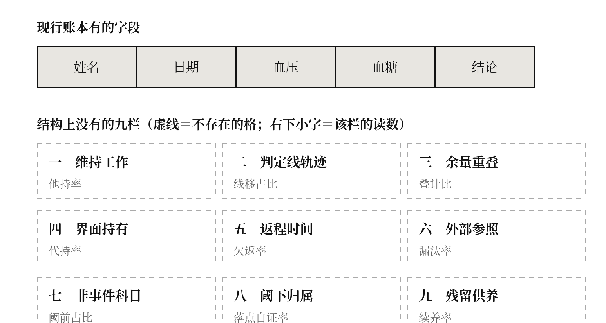
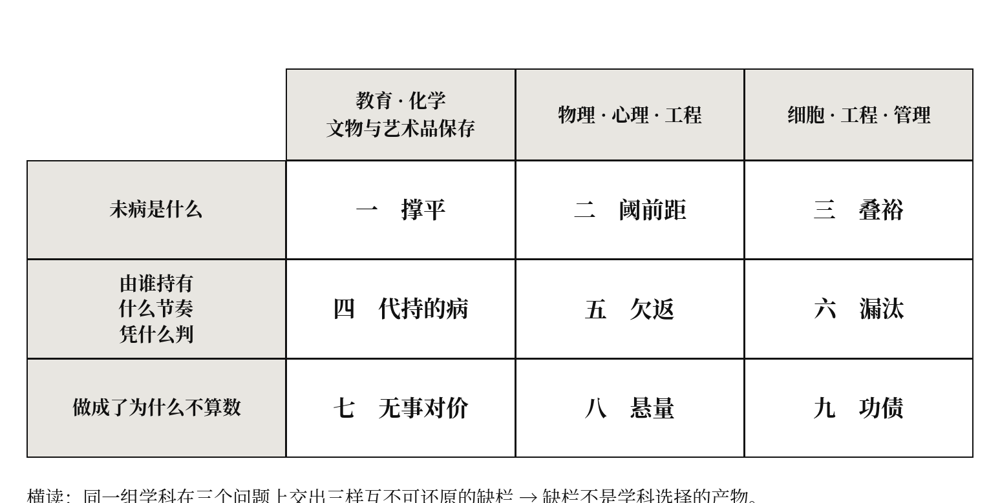

一、三份挑不出毛病的档案
第一份在重症监护室。心率、血压、血氧、体温、尿量，五项全部落在正常区间，监护屏上一片平静。这份档案在任何一次质控评比里都是优秀病历。而维持这五项读数的，是呼吸机、血管活性药物泵、透析机、恒温毯，以及每小时一次的护理动作。撤掉其中任何一样，屏幕在几分钟内改变。
第二份在体检中心。一个人的档案上连续十二年写着“血压正常”。十二年里，他的收缩压从一百一十八升到一百三十六；同期，判定线从一百六十降到一百四十再降到一百三十。两条线一直在错开又靠拢，而结论一次没变。账面是真的，读数也是真的，只有它们之间的关系被丢掉了。
第三份在门诊。一位老人在四个科室各有一份处方，每一份都符合本科室的指南，每一份的剂量都在安全范围。四份处方各自计算安全性时，依据的是同一份肝肾清除能力，而没有任何一步把四科算进去的份额加起来与那份化验值相比。四张处方在四个系统里，一张化验单在第五个系统里。
三份档案有一个共同点：它们全都通过了全部形式审查，而它们所依据的那样东西，在任何一本账上都没有一栏。
本书处理的就是这一类东西。
二、把它换成四个日常的例子
上一节那三份档案来自专业现场，读者要先信任叙述者才读得进去。这一节换四个不需要任何信任的例子——它们都不在医学里，而它们缺的是同一样东西。
其一，家务不进国民经济核算。 请一位护工照顾老人，一个月六千元，这笔钱计入国内生产总值；家人辞去工作在家照顾，一分不计。同样的劳动、同样的时长、同样的效果，一个有科目，一个没有。没有人会把这称作“统计不够准确”或“仪器不够灵敏”——所有人都明白，国民经济核算按交易记账，没有交易就没有凭证，没有凭证就没有分录。不是记少了，是这套账在结构上接不住它。
其二，客厅里的二十二度。 温度计上一直显示二十二度。但有两种二十二度：一种是室外也是二十二度，空调根本没开；另一种是室外零下五度，空调全功率运转，一个月电费四千。在温度计上，这两个二十二度完全相同。 温度计没有坏，读数也没有错——它只是不记录“这个二十二度是靠什么撑住的”。要知道这件事得看电费单，而电费单与温度计不在同一个系统里。（这正是第一章。）
其三，银行卡上的十万。 两个人的余额都是十万。一个是自己的钱；另一个是房贷这个月还没扣、朋友借的还没还、公司预付的项目款还没花。余额这一栏没有写错，余额这一栏只是不区分“这十万里有多少是别人的”。要区分，需要另一栏，而个人流水里没有那一栏。于是第二个人不是“财务状况差”——他是在一份看起来毫无问题的账上，处在一个这本账读不出来的位置。（这正是第二章与第九章各自的一半。）
其四，四个人分一块蛋糕。 四个人各自计算：我要吃的这一块，够不够我吃？四个人算完都说够，四份计算全部正确。没有人算过：四块加起来，有没有超过这块蛋糕。不是谁算错了，是没有任何一张表要求填写“你这一块，还有谁也算作自己的”。（这正是第三章。）
四个例子有一个共同点，也正是本书全部主张的那一句：账本没有出错，账本只是没有那一栏。
由此可以看出前一节那三份档案缺的分别是什么。体检报告上有几十项指标，而有一行永远不会出现——
你这一次的“正常”，是靠什么正常的？
它不出现，不是因为医生偷懒不写，而是因为报告的记账单位是“这个人的这一项数值”，而“靠什么”发生在这个人与他周围之间：它跨出了这本账的单位，所以没有地方可以写。
需要立刻堵住一个误读。说“账上没有那一栏”，很容易被听成“这是一片荒地，医疗系统还没顾上，早晚会补上”。本书九章反复要证的恰恰相反：账本在，而且记得极好。 那份重症监护记录、那份连续十二年的体检档案、那四张处方，每一条记录都准确、及时、合规，每一位在场者都尽了职，任何一次质控评比都会判为优秀。缺的不是记录，是一栏；而且越正规、越精细、越尽责，那一栏越不可能被补上——因为补它需要跨出这本账的记账单位，而记账单位恰恰是这套制度赖以运转的东西。
于是本书可以用一句话说完：
治未病，不是治未来的病，是治账上没有那一栏的病。
更准确地说：未病不是治不了，是在立账之前，它连一个可以被治的对象都不是。 先有一栏，才有一个可以下手的东西；先有一个可以下手的东西，才谈得上治。两千年落不了地，卡住的是第一步，不是第三步。
三、“未病”这两个字被放错了轴
《素问·四气调神大论》那句“是故圣人不治已病治未病”，被引用了两千年，未见有医家降低它的地位，而它长期未能成为医疗实践的主要组成部分。对这个背离，通行的解释有三种：医者与病人的认知不足、早期征象的可检测性不足、体制对预防价值的承认不足。三种解释各自都有道理，也各自都失败过一次——认知教育做了几十年，检测灵敏度提高了几个量级，支付方式改了好几轮，而实践量没有跟上。三次落空，说明被瞄准的都不是那个真正在起作用的东西。
失败的共同来源，在一个从未被追问的读法上：主流的操作化几乎都沿时间轴展开。 病是一条线，未病是这条线之前的那一段，因此“治未病”就是把发现的时点往前挪。整个早期筛查纲领是这条读法的直接产物，而它得到的结果是：检测提前了，治疗跟着提前了，预防没有变多。
本书主张这条读法用错了轴。
把话说到最紧：“未病”之“未”不是时间副词，是记账状态。 不是“还没有到”，是“还没有一栏可以记它”。
四、本书处理的是“治未病”的哪一层
“治未病”这四个字在不同语境下指的不是同一件事。不先分层，本书会同时受到两面的责难：中医一侧会说它对未病、欲病、既病防变、瘥后防复的经典层次处理不足；现代医学一侧会说它借了一个中医术语，讲的却是工程、组织与数据库。两种责难都成立，只要不分层。
分五层：
- 第一层，经典医理中的治未病——《素问》《难经》以降的义理与其历代注疏。这是训诂与医史的题目。
- 第二层，公共卫生意义上的普遍预防——清洁饮水、疫苗、控烟、安全带。
- 第三层，临床筛查与风险分层——把人群按风险排序，对高风险者提前干预。
- 第四层，个体无症状期的干预——体质辨识、亚健康调理、早期用药。
- 第五层，预防性判定如何成为一个制度对象——一次“尚未发生”的判断，凭什么字段作出、由谁持有、如何结算、依据什么被撤销。
本书处理的是第五层，并且只通过第五层去重新解释前四层。
因此，本书不主张自己给出的定义就是古典“未病”的本义。它借的是“治未病”这个延续了两千年而始终未能落地的实践难题，提出一个当代的制度性重构。 经典层次的义理留给经学与医史，本书不与之争。
由此还带来一条写法上的收束：全书大量出现的“未病不是 X，而是 Y”这一句式，应当一律读作“在本书所研究的制度记账层面，未病不只表现为 X，更应被重构为 Y”。前一种写法有力量，后一种写法才是本书能担保的。此处统一声明一次，正文不再逐处加限定语。
五、九次碰撞：这本书是怎么做出来的
本书的九章不是九篇综述，也不是九次跨学科比喻。每一章都走同一道工序，九次都走完了：
第一步，取三门与医学无关、却各自天天在处理“尚未发作而已经不同”的学问，把它们各自最成熟的做法写实。第二步，证明三者不能同时成立——不是“角度不同”，是甲每天在做的那件事正是乙诊断出的病。第三步，找出三家共同站着而从未说出口的那一句；判别它的标准只有一条：把它念给三家听，三家都会说“这还用说吗”。会引起争论的是某一家的立场，不会引起争论的才是所有人脚下的那块地。第四步，推翻它——而推翻它的材料不从外面搬，必须是三家之一自己已经掌握、已经发表、只是从来没有往这个方向用过的事实。从外面搬只是多出一家，三家可以各自退回阵地。
推翻之后，第五步给出一个新的判断，并给它一个名字；名字合不合格只有一条判据：把这个读数删掉，那样东西是不是就不存在了？如果它照样在、只是不好测，那该章做的是把已有的东西操作化，而不是提出一样新的东西。第六步做一张两轴四格表，并指认要打的那一格；这一格必须通过全部形式审查——一眼就能看出的坏不需要一张新表。第七步给出一句不含任何情态词、可以拿去问记录的判据：“应当”“有意义”“充分”“真正”“恰当”这些词一个都不许出现。第八步把判据压成一个无量纲的比率，并举一个“既有指标最好看、而这个数最难看”的真实例子——举不出来，这个读数就是既有指标的影子，白造。
然后是四道自我约束，这四道是本书与一般跨学科写作最要紧的分别：第九步，写出三个领域反过来削掉了该章原本要说的哪三句更强的话；第十步，与每一位最近的邻居逐条划界，每一条都必须写成“若观察到甲则该章对、若观察到乙则该说法对”的可判定形式——“更强调”“更深入”“层次更根本”一句都不算数，说出来就等于承认被覆盖；第十一步，写出这个读数一旦进入考核，最省事的达标方式会怎样毁掉它要保护的东西；第十二步，写出该章自己落在哪一格。
最后是证伪：先写出最强的那个竞争解释，再给出排除它之后仍须成立的条件，交出该章解释不了的洞，并押一条写死日期的赌注，连同“什么不算命中”一并写明。
九章都跑完了这十几步。工序的可复制性本身是一项证据：同一套动作被搬到九组互不相干的学科上，九次都撞出了东西，而撞出来的九样彼此不同。
六、母题
九章合起来说的是同一句话，而这句话没有任何一章单独说得出：
一个体系的账本按某个单位建，字段只为“属于这个单位的东西”预留；于是凡是跨出这个单位、或者根本不属于任何单位的那些东西，不是被记录得少，是没有地方可以写。而“未病”恰恰是这一类东西。
三句要点，逐句说死：
其一，这不是疏漏。 病历一人一份，学籍一人一份，藏品档案一件一份，工艺台账一釜一本。一本以个体为单位的账，结构上就不可能记下发生在个体之外的动作，正如一本以科室为单位的成本账记不下走廊。任何一派都不是“不重视”它，是没有地方可以写它。
其二，它不是“难测”。 这两者的差别是本书全部主张的支点。难测的东西，可以靠更灵敏的仪器、更密的观察、更长的随访解决——这正是过去三十年投进去的方向。而本书说的那一类，删掉这个读法它不是变得难测——它在现实中照常发生，只是尚未被构造成现行制度可识别、可结算、可行动的对象（三层区分见总论第二节）。
其三，做得越正规，它越不可见。 九章的靶格各不相同，而三条签名逐章相同：它在短期指标上表现为改善；它的失效不产生任何信号；它自我加固，而且是以专业化、精细化、责任明确的形式加固的。这三条合起来说明靶格不是失职的产物，是尽职的产物。
七、九栏
九章各自指认了一栏不存在的账。合成一张表，就是这本书：
| 章 | 缺的那一栏 | 读数 | 一句可以拿去问记录的判据 |
|---|---|---|---|
| 一 撑平 | 维持这个读数不变所需的动作，及其承担者 | 他持率＋有无撤除安排 | 过去 N 个周期里，这个读数每一次回到正常范围，分别是谁做的动作？ |
| 二 阈前距 | 判定线自己的位置轨迹 | 线移占比＋方向符号 | 这一次判定所用的那条线，与上一次是不是同一条？改的是哪一处、什么时候改的、依据哪一份文件？ |
| 三 叠裕 | 各单位合格结论之间的重叠 | 叠计比＋动用相关性 | 这一次判定所依据的那份余量，还有哪几个单位正在把它算作自己的？加起来是那份余量的几倍？ |
| 四 代持的病 | 个体与某一处界面共同持有的未兑现的量 | 代持率 | 最近一年，围绕这个人发生过、而没有进入任何一条记录的那些动作，是谁做的、有多少次？ |
| 五 欠返 | 两次负荷之间的间隔相对于它自己的恢复时间 | 欠返率 | 最近一年，这个体系的两次负荷之间，间隔短于它上一次完全恢复所用时间的，有多少次？ |
| 六 漏汰 | 判定所依据的参照是否与被判者一起移动 | 漏汰率 | 最近一年，这个体系做出的合格判定中，参照物取自体系之外的有几次？上一次是什么时候？ |
| 七 无事对价 | 兑换物为非事件的那一笔支付的科目 | 入账迟滞率 | 这一次没有发生的事，记在谁名下、算多少？ |
| 八 悬量 | 阈下风险的归属 | 落点自证率 | 在这次介入发生之前，被介入的那一个是怎么选出来的？ |
| 九 功债 | 成功留下的残留，及供养它的成本 | 续养率 | 上一次为这类问题加上的那一样东西，是什么时候、由谁、按什么条件撤掉的？ |
九句判据都不含情态词，都可以拿去问一份具体的记录——病历、检验台账、指南版本历史、排班表、校准证书、处方系统、工单、议程、日程。它们问的不是这个人怎么样，是这本账长什么样。

八、这九样是不是同一样东西
一个诚实的读者读到这里，会提出本书最难回答的那个问题：九个新词、九个新读数、九张四格表，形式高度一致——这是不是一个模子套了九遍？
本书不辩解，交出设计：九章是一张三乘三的表。
三组学科，各被同一个问题问过三次；三个问题，各被三组学科答过一次：
| 教育 · 化学 · 文物与艺术品保存 | 物理 · 心理 · 工程 | 细胞 · 工程 · 管理 | |
|---|---|---|---|
| 未病是什么 | 一 撑平 | 二 阈前距 | 三 叠裕 |
| 那份量由谁持有、按什么节奏、凭什么判 | 四 代持的病 | 五 欠返 | 六 漏汰 |
| 做成了为什么不算数 | 七 无事对价 | 八 悬量 | 九 功债 |
这张表要横竖各读一遍。
横着读（学科不变，问题变）：同一组学科，在三个问题上交出了三样完全不同的缺栏。教育、化学与文物保存这一组，第一次交出的是维持工作，第二次是界面的持有，第三次是非事件的科目——三者互不蕴含，也互不可还原。如果缺栏是“选了哪几门学科”的产物，同一组学科应当反复给出同一样东西。它没有。
竖着读（问题不变，学科变）：同一个问题，交给三组毫无交集的学科，交出的是三样不同的缺栏——而它们的形状相同：都是一件真实发生、可清点、且在现行账上无字段的东西。如果缺栏是问题的措辞逼出来的，那么换一组学科应当逼出同一个答案。它也没有。
两个方向合起来，指向同一个解释：缺栏不是学科的性质，也不是问题的性质，是账本这件事本身的性质——与被记的是什么、由谁来记无关。
这条结论没有任何一章说得出，因为每一章只占这张表的一格。它是这本书之所以是一本书，而不是九篇论文的装订，唯一的理由。
同时必须写下这个设计的代价，而且它是实的：同一组学科被用了三次，那一组学科的盲区也就被继承了三次。第十章会逐组指认这三处继承的盲区，并说明哪几条判断因此不能被本书自己检验。

九、与最近几家的分界
本书整体有几位很近的邻居。逐位划清，每位给一条可判定的对照。
亚健康与体质辨识。 它们第一次让“未病”变成可以填表、可以统计、可以进指南的东西，这是实实在在的推进。分界：两者都把未病定位为这个人身上的一种状态或类型；本书主张未病的靶格不是这个人身上的东西——它在这个人与维持者之间、与判定线之间、与其余单位之间、与那一处界面之间。判定：若一个人在所有既有检查中都查不出任何异常、也不属于任何一种偏颇体质，而他的他持率接近一、叠计比是三、落点自证率是零——则本书说的是另一件事。
过度诊断。 它成功地把“发现得更早”与“活得更好”分开了。分界：过度诊断讲的是被检出的东西不重要，本书讲的是没有被检出的东西不是不存在，而是没有字段。二者方向相反：一个说别记那么多，一个说少记了一栏。判定：把诊断阈值调到公认最优之后，若九栏中的任何一栏随之出现在常规记录里，则本书被它覆盖；若阈值定得再好，那九栏仍然空着，则本书说的是另一件事。
稳态应变负荷。 这是最近的一位，因为它同样说“平是买来的”。分界：它是一个存量，假定代价沉积在个体身上，因而可以从个体身上抽血测出来；本书第一章说的是流量，而且关键在于这份流量可以完全由体外承担，因而在个体身上不留任何痕迹。判定见第一章第十三节。
不可见劳动。 与本书第一、四章的操作高度重合，必须坦白承认。分界在处方方向上，而且相反：那一支要求让这些劳动被看见、被计价、被承认；本书第四章第十五节论证，把它计价恰恰会毁掉它。判定：对一处高代持率的界面实施全面编码化，若其服务对象的事件率在随后十二至二十四个月内不上升，则本书此处为伪，那一支的框架在此优于本书。
预防悖论与人群策略。 本书第七、八章与它共享全部现象，只在机制上分开：罗斯用收益的分布来选策略，本书用落点的可得性来选。判定：在高危识别做得很准的场合，若高危策略的净获益随判别能力单调上升，则罗斯的框架足够、本书多余。第八章明写：若哪一天有干净的证据表明它并未失效，本书那一处的独立性就没有了。
指标一旦成为目标就失效。 本书引它不是为了分界，是为了承认：本书提出的九个读数，每一个进入考核之后最省事的达标方式，恰恰会摧毁它要保护的东西。九章各有一节专写这件事，九节的结尾都是同一句——我看不到出口。 这不是修辞上的谦虚，是这九个读数各自的结构性限制，第十四章会合起来处理。
十、这本书敢让什么判自己输
一本书若不说清哪里会输，它的适用范围就会被读者自行放大到荒谬，然后连同它本来站得住的部分一起被丢掉。
九章合计写下约三十六条证伪条件、九条写死日期的赌注（含“什么不算命中”）、九处不适用边界、九处伦理硬约束、十八个本书解释不了的洞。这些不放在附录里当装饰，它们是本书的主体的一部分，附录五给出全部条目的汇总表。
其中最便宜的一条，值得单独提出来，因为它一个下午就能做完，而且不需要任何统计：抽查十家以上的医院、检验机构或测评机构，看它们的判定结论字段旁边，有没有记录“本次判定所依据的标准版本”“所依赖的共享储备”“维持该读数所需的外部动作”这一类字段。 若多数机构有，本书的第三层主张当场为伪；若多数机构没有，那一层当场坐实。
这条检验本书没有做。 这是本书目前最该被追问的一处，也是作者欠下的第一笔账。
十一、几个约定
术语。 全书统一称“文物与艺术品保存”。各章原稿曾分别写作“艺术保存”“艺术品保护”“文物保护”，指同一门行当，此次统稿已一律改从统一名称。“账本”指任何以某个单位为对象、按固定字段持续记录其状态的制度化记录：病历、学籍、藏品状态卡、工艺台账、项目管理系统、控制系统日志皆属此类。本书的全部主张都是关于这类记录的字段结构的，不涉及记录的准确性。
格。 九章各有一张两轴四格表。全书统一一条读法纪律：格是一次判定的属性，不是被判定者的属性。 同一个人在血压这一项上可能落在某一格，在肝功这一项上落在另一格。任何把某一格当作对某人、某科室、某机构之评价的用法，都直接违反本书的主张——因为本书的全部论点正是：在那些格里，每一个单位的每一条记录都是准确的、合规的、尽职的。
重复。 九章原为九篇可独立成立的论文，本书保留了这一性质：任何一章都可以被单独抽出来读完。代价是各章在方法陈述上有意重复——判据与命题的分界、无量纲比率的理由、“把这个读数删掉它还在不在”这一自问，会在数章中以相近的措辞再次出现。统稿时没有把它们删并，因为删并之后单章就不再自足；连贯通读的读者可以略过这些段落，它们在每章中的位置是固定的。
外部篇名。 各章“与本书其余各章的分界”一节中，偶尔出现《临界回落》《轮空》两个篇名。那是本书之外另一系列的同题作品，此处保留原始划界的原文，读者不必查阅亦可读通。
证据的地位。 九章合计一百余处跨领域兑现，全部是预测，不是已完成的验证。其中一部分可以在既有记录里回溯，成本很低；另一部分需要前瞻设计。在这些检验完成之前，本书的地位是一个待检验的读法，不是一个可以据以改变临床、教学、检验或组织处置的结论。